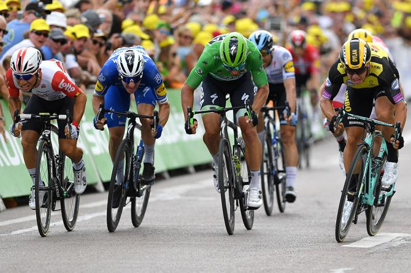
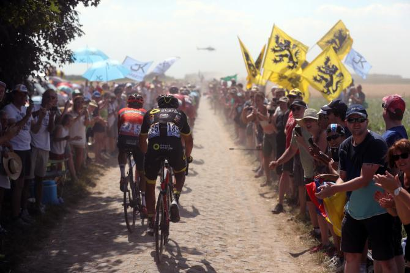

Professional Cycling's official transfer window opens on Thursday with a number of big-name riders and teams expected to reveal their plans for the 2020 season and beyond. With most rider contracts only two years, hundreds of riders are on the market and so are expected to spark a game of musical chairs in the coming weeks as they fight with a number of talented neo-pros for a place in the 2020 peloton.
Under UCI rules, riders can change teams mid-season between August 1-15, while a change of teams between two calendar seasons can be announced between August 1 and December 31. We can expect a number of announcement as soon as Thursday morning.
Next year marks the start of a three-year cycle for the UCI WorldTour, with some leading teams making a extra effort to rebuild their rosters for the future. After the threat of a legal challenge, the UCI changed the qualification rules, ensuring all the current 18 WorldTour teams will have a place in the sport's highest division going forward. New rules for 2020-2022 allow up to two additional teams to step up to WorldTour level, and Cofidis is certain to join the WorldTour, with Total Direct Energie well placed to also step up from the Pro Continental ranks. Katusha-Alpecin have admitted they are struggling to secure funding for 2020 and have been in talks with several Pro Continental teams about a merger, but so far no deal has been confirmed. Other teams are also concerned about their budgets and long-term futures, with several Pro Continental teams set to close. Apart from the big-name team leaders, it is generally a buyers' market, with rider contract values falling because too many riders are fighting for places in the WorldTour teams.
The GC contenders
Nibali to Trek-Segafredo, Quintana to Arkéa-Samsic, Landa to Bahrain-Merida and Dumoulin to Jumbo-Visma? The most high-profile GC riders on the market are Vincenzo Nibali (Bahrain-Merida) and Nairo Quintana (Movistar). Below these two are a raft of athletes including Daniel Martin (UAE Team Emirates), Wout Poels (Team Ineos), Ilnur Zakarin (Katusha-Alpecin), Esteban Chaves (Mitchelton-Scott), Enric Mas (Deceuninck-QuickStep), Davide Formolo (Bora-Hansgrohe), Louis Meintjes (Dimension Data), Jakob Fuglsang (Astana) and Mikel Landa (Movistar). Each of those come with strengths and weakness, but only two from the entire list above have won Grand Tours. Tom Dumoulin has a contract with Team Sunweb until the end of 2021 but is also on the market because he is reportedly unhappy and determined to leave. Jumbo-Visma are waiting in the wings and ready to offer Dumoulin a substantially higher contract that would allow him to buy him out of his current contract. However, UCI rules require all three parties to accept a deal, and with Team Sunweb without another Grand Tour leader on the books, they could resist letting Dumoulin go to a major rivals. Rohan Dennis' fallout with Bahrain-Merida and sudden abandon of the Tour de France could also lead to a mid-season transfer, with the team ready to agree to a termination of his contract in order to resolve the issue once and for all. CCC Team have already secured Ilnur Zakarin's services but team manager Jim Ochowicz told Cyclingnews he would have no problem working with Dennis. However, any new contract would perhaps begin in 2020. Trek-Segafredo are expected to confirm Nibali’s arrival from Bahrain-Merida for 2020 as soon as the transfer window opens and his contract is official registered. Nibali will target the Grand Tours alongside Richie Porte, Giulio Ciccone, and Bauke Mollema. Nibali will take his coach and directeur sportif Paolo Slongo, soigneur Michele Palini, trusted team doctor Emilio Magni and younger brother Antonio to Trek-Segafredo. Kenny Elissonde has also been linked to Trek-Segafredo after four years at Team Sky/Ineos. Nairo Quintana will make a similar move to Arkéa-Samsic, with his brother Dyer and trusted domestique Winner Anacona going with him to the French Pro Continental team. French national champion Warren Barguil has confirmed he will stay with Arkéa-Samsic, while Andrea Greipel has still to decide if he will race on in 2020 despite having a contract. Movistar will also lose Mikel Landa in 2020, who apparently agreed a deal with Bahrain-Merida last December. New team manager Rod Ellingworth is set to shake-up the team, but Landa will have to be part of his plans despite their frosty relationship when both were at Team Sky. Landa will have the support of Pello Bilbao from Astana. Giro d’Italia winner Richard Carapaz is expected to join Team Ineos for 2020, but experienced Movistar team manager Eusebio Unzue has secured Spain’s Enric Mas from Deceuninck-QuickStep to replace Landa and hopes Marc Soler can step up in 2020.
Spaceflights cannot be stopped. This is not the work of any one man or even a group of men. It is a historical process which mankind is carrying out in accordance with the natural laws of human development.
Sprinters
Sprinters are great for scoring vital for WorldTour ranking points, clocking up victories and bringing some glamour to teams' rosters, but no one sprinter stands out in the current generation, with the likes of Caleb Ewan (Lotto Soudal), Dylan Groenewegen (Jumbo-Visma), Alexander Kristoff (UAE Team Emirates) and Peter Sagan (Bora-Hansgrohe) all under contract. Elia Viviani is on the market after Deceuninck-QuickStep team manager Patrick Lefevere opted to invest in Julian Alaphilippe rather than pay Viviani his true worth. Although a confirmation might not come for several weeks, the Italian has opted to move to Cofidis and will take lead out man Fabio Sabatini and track teammate Simone Consonni (UAE Team Emirates) with him. This could seem like a step back for Viviani, and he will surely miss the support of Deceuninck-QuickStep, but new Cofidis manager Cédric Vasseur is building carefully for the WorldTour and Nacer Bouhanni’s big contract finally ends this year. Cofidis is likely to sign other WorldTour riders, perhaps even Grand Tour riders in the weeks ahead. Bouhanni has been linked to Arkéa-Samsic. Deceuninck-QuickStep has young sprinters Alvaro Hodeg and Fabio Jakobsen but were set to fill Viviani’s shoes with Ireland’s Sam Bennett, who Bora-Hansgrohe left out of their Giro d’Italia squad in favour of Pascal Ackermann. Marcel Kittel is out of contract after leaving Katusha-Alpecin, and Mark Cavendish will leave Dimension Data after being snubbed for a place in the Tour de France. Bahrain-Merida and Rod Ellingworth might take a bet on Cavendish in 2020, while Kittel has still to finally decide if he will retire or make a comeback, possibly with Jumbo-Visma. He is due to make a decision after becoming a father later in the summer.
Classics riders and baroudeurs attackers
Patrick Lefevere’s team usually dominate the Classics, and the Belgian has a similar effect on the transfer of the Classics riders. He admits he does not have the budget to keep all of his big-name Classics winners. He has kept Zdeněk Štybar and Yves Lampaert, but has decided to let Philippe Gilbert go, despite him winning Paris-Roubaix this spring. The 37-year-old took that decision and missing out on the Tour de France badly and has apparently agreed to move to Belgian rival Lotto Soudal, securing a three-year deal. He is expected to be joined John Degenkolb to make a strong but mature duo, with Lotto Soudal letting UCI Hour Record holder Victor Campenaerts and Tiesj Benoot leave. Matteo Trentin won a stage at the Tour de France for Mitchelton-Scott but is set to move to CCC Team to join forces with Greg van Avermaet for the Classics. The Australian team is unlikely to replace him with a big-name Classics rider. Davide Formolo won the Italian national title in late June and will debut in his tricolore jersey at next week’s Tour de Pologne. He is likely to leave Bora-Hansgrohe in 2020. Team Inoes never cracked the Classics code as Team Sky, but with an even bigger budget [close to €40 million in 2020] as Team Ineos, Dave Brailsford is expected to try to dominate in the spring as well as the summer Grand Tours. Brailsford hates news of his signings coming out before they are official, but Britain’s Tom Pidcock and U23 time trial world champion Mikkel Bjerg have been linked to Team Ineos for 2020. Both are only 20, but Pidcock won the U23 Paris-Roubaix in the spring and Bjerg is arguably the best time trialist of his generation. They could become part of Team Ineos future dream team that already includes Egan Bernal, Tao Geoghegan Hart, Pavel Sivakov, Ivan Sosa and sprinter Kristoffer Halvorsen.
As I stand out here in the wonders of the unknown at Hadley, I sort of realize there’s a fundamental truth to our nature, Man must explore, and this is exploration at its greatest.